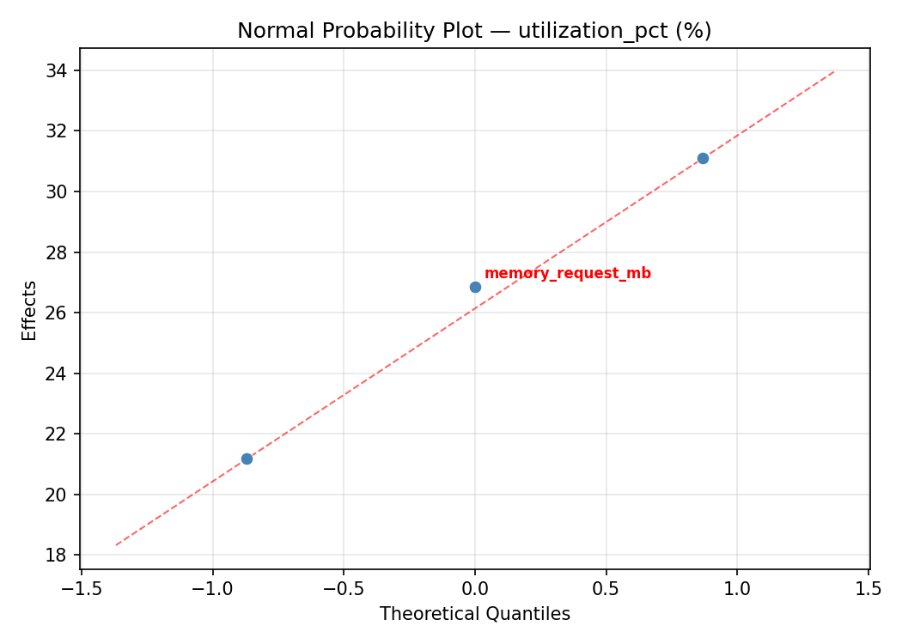
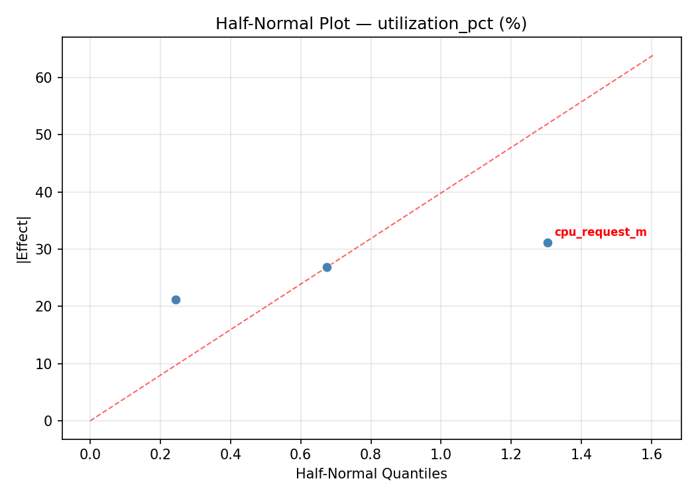
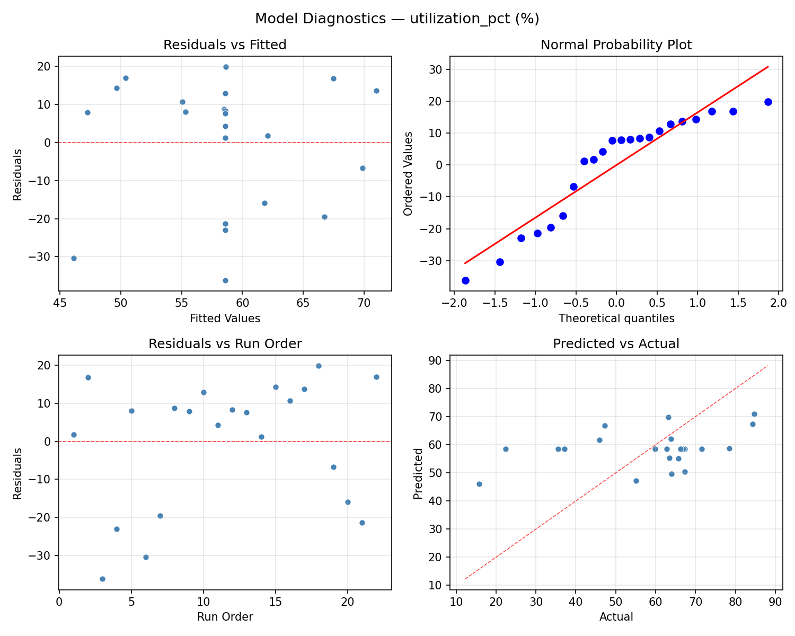
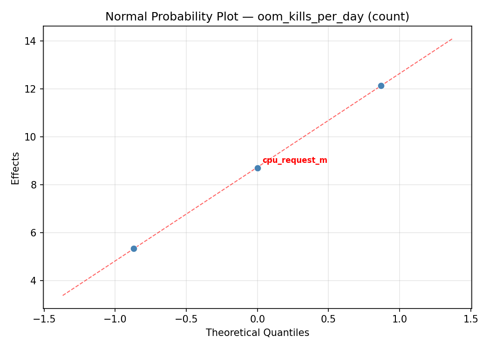
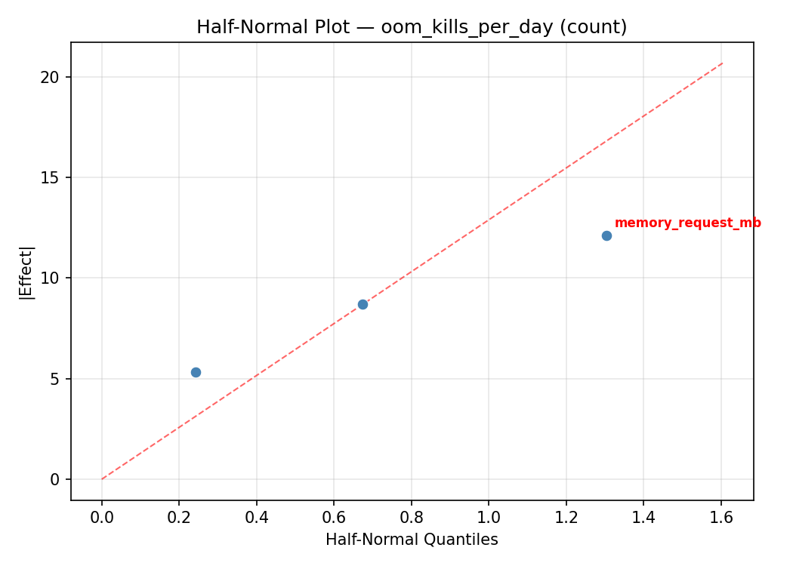
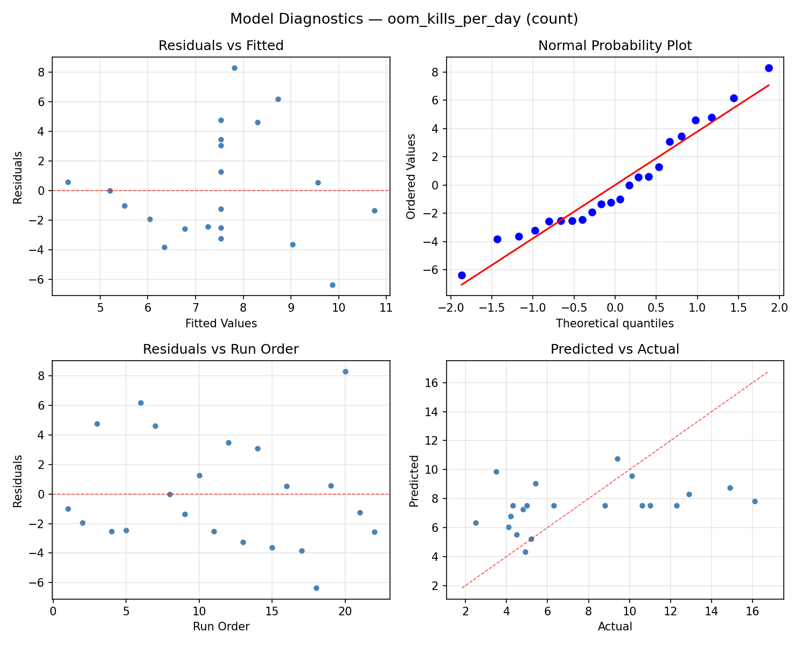

Summary
This experiment investigates container resource limits. Central Composite design optimizing CPU/memory requests and limits for utilization and stability.
The design varies 3 factors: cpu request m (millicores), ranging from 100 to 1000, cpu limit m (millicores), ranging from 500 to 2000, and memory request mb (MB), ranging from 128 to 1024. The goal is to optimize 2 responses: utilization pct (%) (maximize) and oom kills per day (count) (minimize). Fixed conditions held constant across all runs include memory limit mb = 2048, qos class = burstable.
A Central Composite Design (CCD) was selected to fit a full quadratic response surface model, including curvature and interaction effects. With 3 factors this produces 22 runs including center points and axial (star) points that extend beyond the factorial range.
Quadratic response surface models were fitted to capture potential curvature and factor interactions. The RSM contour plots below visualize how pairs of factors jointly affect each response.
Key Findings
For utilization pct, the most influential factors were cpu request m (36.6%), memory request mb (33.2%), cpu limit m (30.2%). The best observed value was 84.7 (at cpu request m = 100, cpu limit m = 2000, memory request mb = 1024).
For oom kills per day, the most influential factors were memory request mb (58.8%), cpu limit m (21.9%), cpu request m (19.3%). The best observed value was 2.5 (at cpu request m = 100, cpu limit m = 2000, memory request mb = 1024).
Recommended Next Steps
- Run confirmation experiments at the predicted optimal settings to validate the model.
- Consider whether any fixed factors should be varied in a future study.
Experimental Setup
Factors
| Factor | Low | High | Unit |
|---|
cpu_request_m | 100 | 1000 | millicores |
cpu_limit_m | 500 | 2000 | millicores |
memory_request_mb | 128 | 1024 | MB |
Fixed: memory_limit_mb = 2048, qos_class = burstable
Responses
| Response | Direction | Unit |
|---|
utilization_pct | ↑ maximize | % |
oom_kills_per_day | ↓ minimize | count |
Configuration
{
"metadata": {
"name": "Container Resource Limits",
"description": "Central Composite design optimizing CPU/memory requests and limits for utilization and stability"
},
"factors": [
{
"name": "cpu_request_m",
"levels": [
"100",
"1000"
],
"type": "continuous",
"unit": "millicores"
},
{
"name": "cpu_limit_m",
"levels": [
"500",
"2000"
],
"type": "continuous",
"unit": "millicores"
},
{
"name": "memory_request_mb",
"levels": [
"128",
"1024"
],
"type": "continuous",
"unit": "MB"
}
],
"fixed_factors": {
"memory_limit_mb": "2048",
"qos_class": "burstable"
},
"responses": [
{
"name": "utilization_pct",
"optimize": "maximize",
"unit": "%"
},
{
"name": "oom_kills_per_day",
"optimize": "minimize",
"unit": "count"
}
],
"settings": {
"operation": "central_composite",
"test_script": "use_cases/34_container_resource_limits/sim.sh"
}
}
Experimental Matrix
The Central Composite Design produces 22 runs. Each row is one experiment with specific factor settings.
| Run | cpu_request_m | cpu_limit_m | memory_request_mb |
|---|
| 1 | 550 | 1250 | 576 |
| 2 | 1000 | 500 | 1024 |
| 3 | 100 | 2000 | 128 |
| 4 | 550 | 2619.31 | 576 |
| 5 | 550 | 1250 | 576 |
| 6 | -271.584 | 1250 | 576 |
| 7 | 550 | 1250 | -241.932 |
| 8 | 550 | 1250 | 576 |
| 9 | 1000 | 2000 | 128 |
| 10 | 1371.58 | 1250 | 576 |
| 11 | 550 | 1250 | 576 |
| 12 | 550 | -119.306 | 576 |
| 13 | 550 | 1250 | 576 |
| 14 | 100 | 500 | 1024 |
| 15 | 550 | 1250 | 576 |
| 16 | 1000 | 500 | 128 |
| 17 | 550 | 1250 | 1393.93 |
| 18 | 1000 | 2000 | 1024 |
| 19 | 550 | 1250 | 576 |
| 20 | 100 | 500 | 128 |
| 21 | 100 | 2000 | 1024 |
| 22 | 550 | 1250 | 576 |
Step-by-Step Workflow
1
Preview the design
$ python doe.py info --config use_cases/34_container_resource_limits/config.json
2
Generate the runner script
$ python doe.py generate --config use_cases/34_container_resource_limits/config.json \
--output use_cases/34_container_resource_limits/results/run.sh --seed 42
3
Execute the experiments
$ bash use_cases/34_container_resource_limits/results/run.sh
4
Analyze results
$ python doe.py analyze --config use_cases/34_container_resource_limits/config.json
5
Get optimization recommendations
$ python doe.py optimize --config use_cases/34_container_resource_limits/config.json
6
Multi-objective optimization
With 2 competing responses, use --multi to find the best compromise via Derringer–Suich desirability.
$ python doe.py optimize --config use_cases/34_container_resource_limits/config.json --multi
7
Generate the HTML report
$ python doe.py report --config use_cases/34_container_resource_limits/config.json \
--output use_cases/34_container_resource_limits/results/report.html
Features Exercised
| Feature | Value |
|---|
| Design type | central_composite |
| Factor types | continuous (all 3) |
| Arg style | double-dash |
| Responses | 2 (utilization_pct ↑, oom_kills_per_day ↓) |
| Total runs | 22 |
Analysis Results
Generated from actual experiment runs using the DOE Helper Tool.
Response: utilization_pct
Top factors: cpu_request_m (36.6%), memory_request_mb (33.2%), cpu_limit_m (30.2%).
ANOVA
| Source | DF | SS | MS | F | p-value |
|---|
| Source | DF | SS | MS | F | p-value |
| cpu_request_m | 4 | 2274.2561 | 568.5640 | 3.415 | 0.0582 |
| cpu_limit_m | 4 | 1145.8011 | 286.4503 | 1.721 | 0.2290 |
| memory_request_mb | 4 | 1007.1186 | 251.7796 | 1.512 | 0.2778 |
| Lack | of | Fit | 2 | 1200.7733 | 600.3866 |
| Pure | Error | 7 | 1165.3787 | | |
| Error | 9 | 2366.1520 | 166.4827 | | |
| Total | 21 | 6793.3277 | 323.4918 | | |
Pareto Chart

Main Effects Plot

Normal Probability Plot of Effects

Half-Normal Plot of Effects

Model Diagnostics

Response: oom_kills_per_day
Top factors: memory_request_mb (58.8%), cpu_limit_m (21.9%), cpu_request_m (19.3%).
ANOVA
| Source | DF | SS | MS | F | p-value |
|---|
| Source | DF | SS | MS | F | p-value |
| cpu_request_m | 4 | 22.3059 | 5.5765 | 0.405 | 0.8009 |
| cpu_limit_m | 4 | 16.4067 | 4.1017 | 0.298 | 0.8723 |
| memory_request_mb | 4 | 101.7942 | 25.4486 | 1.847 | 0.2041 |
| Lack | of | Fit | 2 | 98.2453 | 49.1226 |
| Pure | Error | 7 | 96.4387 | | |
| Error | 9 | 194.6840 | 13.7770 | | |
| Total | 21 | 335.1909 | 15.9615 | | |
Pareto Chart

Main Effects Plot

Normal Probability Plot of Effects

Half-Normal Plot of Effects

Model Diagnostics

Response Surface Plots
3D surfaces fitted with quadratic RSM. Red dots are observed data points.
oom kills per day cpu limit m vs memory request mb

oom kills per day cpu request m vs cpu limit m

oom kills per day cpu request m vs memory request mb

utilization pct cpu limit m vs memory request mb

utilization pct cpu request m vs cpu limit m

utilization pct cpu request m vs memory request mb

Multi-Objective Optimization
When responses compete, Derringer–Suich desirability finds the best compromise.
Each response is scaled to a 0–1 desirability, then combined via a weighted geometric mean.
Overall Desirability
D = 0.9545
Per-Response Desirability
| Response | Weight | Desirability | Predicted | Dir |
|---|
utilization_pct |
1.5 |
|
84.70 0.9545 84.70 % |
↑ |
oom_kills_per_day |
1.0 |
|
2.50 0.9545 2.50 count |
↓ |
Recommended Settings
| Factor | Value |
|---|
cpu_request_m | 1000 millicores |
cpu_limit_m | 2000 millicores |
memory_request_mb | 1024 MB |
Source: from observed run #17
Trade-off Summary
Sacrifice = how much worse than single-objective best.
| Response | Predicted | Best Observed | Sacrifice |
|---|
oom_kills_per_day | 2.50 | 2.50 | +0.00 |
Top 3 Runs by Desirability
| Run | D | Factor Settings |
|---|
| #2 | 0.9072 | cpu_request_m=-271.584, cpu_limit_m=1250, memory_request_mb=576 |
| #18 | 0.8788 | cpu_request_m=1371.58, cpu_limit_m=1250, memory_request_mb=576 |
Model Quality
| Response | R² | Type |
|---|
oom_kills_per_day | 0.0935 | linear |
Full Multi-Objective Output
============================================================
MULTI-OBJECTIVE OPTIMIZATION
Method: Derringer-Suich Desirability Function
============================================================
Overall desirability: D = 0.9545
Response Weight Desirability Predicted Direction
---------------------------------------------------------------------
utilization_pct 1.5 0.9545 84.70 % ↑
oom_kills_per_day 1.0 0.9545 2.50 count ↓
Recommended settings:
cpu_request_m = 1000 millicores
cpu_limit_m = 2000 millicores
memory_request_mb = 1024 MB
(from observed run #17)
Trade-off summary:
utilization_pct: 84.70 (best observed: 84.70, sacrifice: +0.00)
oom_kills_per_day: 2.50 (best observed: 2.50, sacrifice: +0.00)
Model quality:
utilization_pct: R² = 0.4125 (quadratic)
oom_kills_per_day: R² = 0.0935 (linear)
Top 3 observed runs by overall desirability:
1. Run #17 (D=0.9545): cpu_request_m=1000, cpu_limit_m=2000, memory_request_mb=1024
2. Run #2 (D=0.9072): cpu_request_m=-271.584, cpu_limit_m=1250, memory_request_mb=576
3. Run #18 (D=0.8788): cpu_request_m=1371.58, cpu_limit_m=1250, memory_request_mb=576
Full Analysis Output
=== Main Effects: utilization_pct ===
Factor Effect Std Error % Contribution
--------------------------------------------------------------
cpu_request_m 35.9000 3.8346 36.6%
memory_request_mb 32.6000 3.8346 33.2%
cpu_limit_m 29.7000 3.8346 30.2%
=== ANOVA Table: utilization_pct ===
Source DF SS MS F p-value
-----------------------------------------------------------------------------
cpu_request_m 4 2274.2561 568.5640 3.415 0.0582
cpu_limit_m 4 1145.8011 286.4503 1.721 0.2290
memory_request_mb 4 1007.1186 251.7796 1.512 0.2778
Lack of Fit 2 1200.7733 600.3866 3.606 0.0838
Pure Error 7 1165.3787 166.4827
Error 9 2366.1520 166.4827
Total 21 6793.3277 323.4918
=== Summary Statistics: utilization_pct ===
cpu_request_m:
Level N Mean Std Min Max
------------------------------------------------------------
-271.584 1 35.6000 0.0000 35.6000 35.6000
100 4 63.5750 3.0794 59.8000 67.3000
1000 4 41.3250 25.8665 15.7000 63.8000
1371.58 1 71.5000 0.0000 71.5000 71.5000
550 12 63.4833 15.0254 37.2000 84.7000
cpu_limit_m:
Level N Mean Std Min Max
------------------------------------------------------------
-119.306 1 66.9000 0.0000 66.9000 66.9000
1250 12 63.7333 15.4388 35.6000 84.7000
2000 4 52.6000 24.6597 15.7000 67.3000
2619.31 1 37.2000 0.0000 37.2000 37.2000
500 4 52.3000 20.0110 22.4000 63.8000
memory_request_mb:
Level N Mean Std Min Max
------------------------------------------------------------
-241.932 1 45.9000 0.0000 45.9000 45.9000
1024 4 51.6500 24.1617 15.7000 67.3000
128 4 53.2500 20.5695 22.4000 64.0000
1393.93 1 78.5000 0.0000 78.5000 78.5000
576 12 62.0417 15.8560 35.6000 84.7000
=== Main Effects: oom_kills_per_day ===
Factor Effect Std Error % Contribution
--------------------------------------------------------------
memory_request_mb 12.6000 0.8518 58.8%
cpu_limit_m 4.7000 0.8518 21.9%
cpu_request_m 4.1250 0.8518 19.3%
=== ANOVA Table: oom_kills_per_day ===
Source DF SS MS F p-value
-----------------------------------------------------------------------------
cpu_request_m 4 22.3059 5.5765 0.405 0.8009
cpu_limit_m 4 16.4067 4.1017 0.298 0.8723
memory_request_mb 4 101.7942 25.4486 1.847 0.2041
Lack of Fit 2 98.2453 49.1226 3.566 0.0856
Pure Error 7 96.4387 13.7770
Error 9 194.6840 13.7770
Total 21 335.1909 15.9615
=== Summary Statistics: oom_kills_per_day ===
cpu_request_m:
Level N Mean Std Min Max
------------------------------------------------------------
-271.584 1 5.0000 0.0000 5.0000 5.0000
100 4 6.5250 2.7244 4.9000 10.6000
1000 4 9.1250 5.2766 4.5000 14.9000
1371.58 1 8.8000 0.0000 8.8000 8.8000
550 12 7.4500 4.3389 2.5000 16.1000
cpu_limit_m:
Level N Mean Std Min Max
------------------------------------------------------------
-119.306 1 11.0000 0.0000 11.0000 11.0000
1250 12 7.1583 4.2637 2.5000 16.1000
2000 4 7.5750 4.8897 4.8000 14.9000
2619.31 1 6.3000 0.0000 6.3000 6.3000
500 4 8.0750 3.9618 4.5000 12.3000
memory_request_mb:
Level N Mean Std Min Max
------------------------------------------------------------
-241.932 1 16.1000 0.0000 16.1000 16.1000
1024 4 8.8000 4.8956 4.5000 14.9000
128 4 6.8500 3.6428 4.8000 12.3000
1393.93 1 3.5000 0.0000 3.5000 3.5000
576 12 6.9667 3.3260 2.5000 12.9000
Optimization Recommendations
=== Optimization: utilization_pct ===
Direction: maximize
Best observed run: #17
cpu_request_m = 100
cpu_limit_m = 2000
memory_request_mb = 1024
Value: 84.7
RSM Model (linear, R² = 0.2682, Adj R² = 0.1462):
Coefficients:
intercept +58.5682
cpu_request_m -5.2849
cpu_limit_m +9.6311
memory_request_mb -1.8788
RSM Model (quadratic, R² = 0.4323, Adj R² = 0.0065):
Coefficients:
intercept +52.8418
cpu_request_m -5.2849
cpu_limit_m +9.6311
memory_request_mb -1.8788
cpu_request_m*cpu_limit_m -1.8750
cpu_request_m*memory_request_mb -0.6000
cpu_limit_m*memory_request_mb +2.5500
cpu_request_m^2 +7.1432
cpu_limit_m^2 +0.3632
memory_request_mb^2 +1.0832
Curvature analysis:
cpu_request_m coef=+7.1432 convex (has a minimum)
memory_request_mb coef=+1.0832 convex (has a minimum)
cpu_limit_m coef=+0.3632 convex (has a minimum)
Notable interactions:
cpu_limit_m*memory_request_mb coef=+2.5500 (synergistic)
cpu_request_m*cpu_limit_m coef=-1.8750 (antagonistic)
cpu_request_m*memory_request_mb coef=-0.6000 (antagonistic)
Predicted optimum (from linear model, at observed points):
cpu_request_m = 550
cpu_limit_m = 2619.31
memory_request_mb = 576
Predicted value: 76.1522
Surface optimum (via L-BFGS-B, linear model):
cpu_request_m = 100
cpu_limit_m = 2000
memory_request_mb = 128
Predicted value: 75.3630
Model quality: Weak fit — consider adding center points or using a different design.
Factor importance:
1. cpu_limit_m (effect: 62.8, contribution: 48.1%)
2. memory_request_mb (effect: 34.5, contribution: 26.4%)
3. cpu_request_m (effect: 33.4, contribution: 25.5%)
=== Optimization: oom_kills_per_day ===
Direction: minimize
Best observed run: #17
cpu_request_m = 100
cpu_limit_m = 2000
memory_request_mb = 1024
Value: 2.5
RSM Model (linear, R² = 0.3530, Adj R² = 0.2452):
Coefficients:
intercept +7.5364
cpu_request_m +1.7029
cpu_limit_m -2.2714
memory_request_mb -0.0910
RSM Model (quadratic, R² = 0.5840, Adj R² = 0.2720):
Coefficients:
intercept +9.5377
cpu_request_m +1.7029
cpu_limit_m -2.2714
memory_request_mb -0.0910
cpu_request_m*cpu_limit_m -0.9625
cpu_request_m*memory_request_mb +0.0375
cpu_limit_m*memory_request_mb -0.2875
cpu_request_m^2 -1.0607
cpu_limit_m^2 -0.3257
memory_request_mb^2 -1.6157
Curvature analysis:
memory_request_mb coef=-1.6157 concave (has a maximum)
cpu_request_m coef=-1.0607 concave (has a maximum)
cpu_limit_m coef=-0.3257 concave (has a maximum)
Notable interactions:
cpu_request_m*cpu_limit_m coef=-0.9625 (antagonistic)
Predicted optimum (from quadratic model, at observed points):
cpu_request_m = 550
cpu_limit_m = -119.306
memory_request_mb = 576
Predicted value: 12.5991
Surface optimum (via L-BFGS-B, quadratic model):
cpu_request_m = 100
cpu_limit_m = 2000
memory_request_mb = 1024
Predicted value: 3.1079
Model quality: Moderate fit — use predictions directionally, not precisely.
Factor importance:
1. cpu_limit_m (effect: 11.4, contribution: 54.1%)
2. cpu_request_m (effect: 5.4, contribution: 25.6%)
3. memory_request_mb (effect: 4.3, contribution: 20.2%)